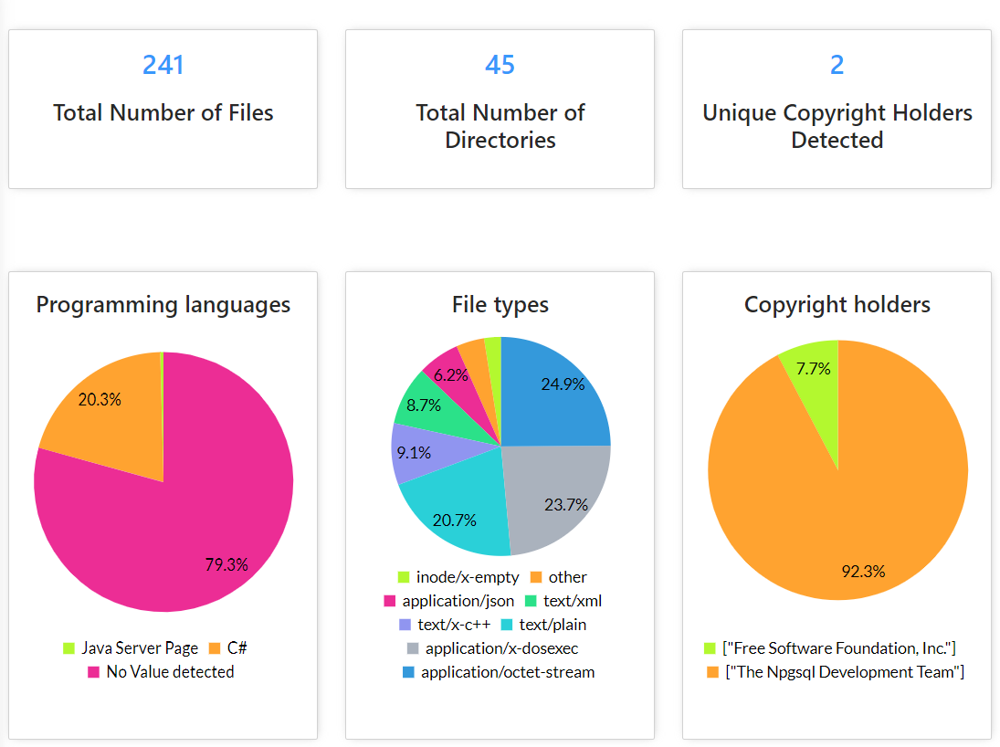
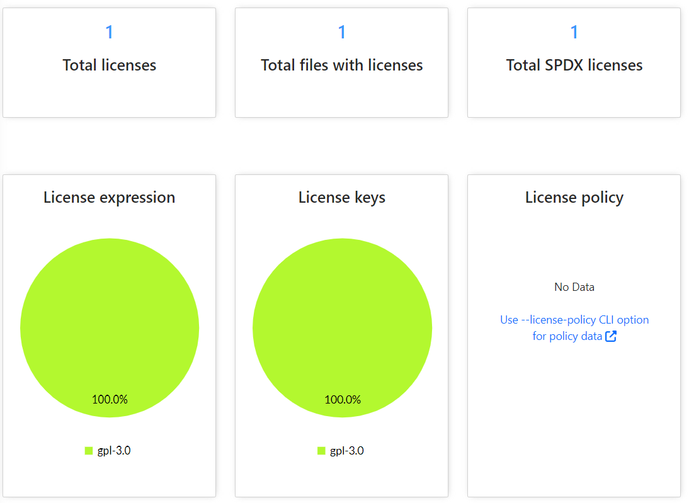
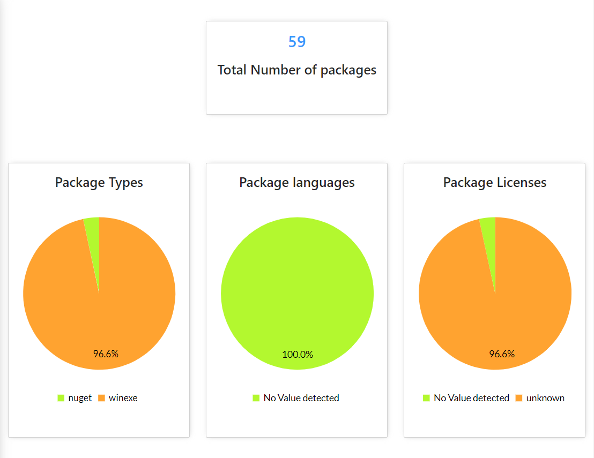

Archivos Scancode
Un proyecto de software típico suele reutilizar cientos de paquetes de terceros. La información de licencias y paquetes, dependencias y origen no siempre es fácil de encontrar y no está normalizada: ScanCode descubre y normaliza estos datos por usted.
Nuestro proyecto deja un archivo scancode en formato json para que pueda revisar todas las licencias y paquetes investigados, con esto le facilitamos la tarea de revisar los paquetes y licencias que se encuentran en el proyecto.
  